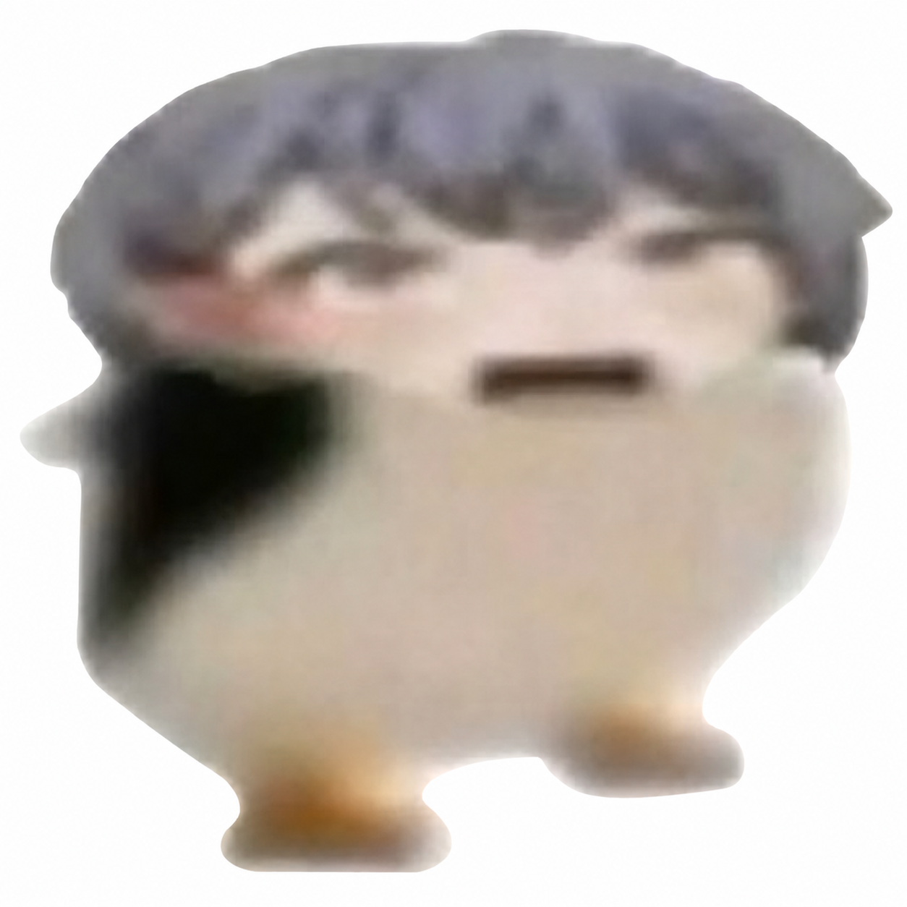

網頁音量

餵食
互動
探險
蘋果
×99
石頭
×99
唱歌
玩球
猜拳
取消唱歌
壱雫空
結束猜拳
剪刀
石頭
布
探險模式
返回
接接樂
接住天上掉下來的物品
神秘地圖
敬請期待
野外露營
敬請期待
河邊釣魚
敬請期待
礦坑探險
敬請期待
森林漫步
敬請期待
0
0
結束
左右移動企鵝接住蘋果和石頭，避開炸藥
選一個出拳吧
連擊數
0
結束
接住球！
滑鼠或手指左右移動球拍
你死了
企鵝從太高的地方摔了下來
重新開始